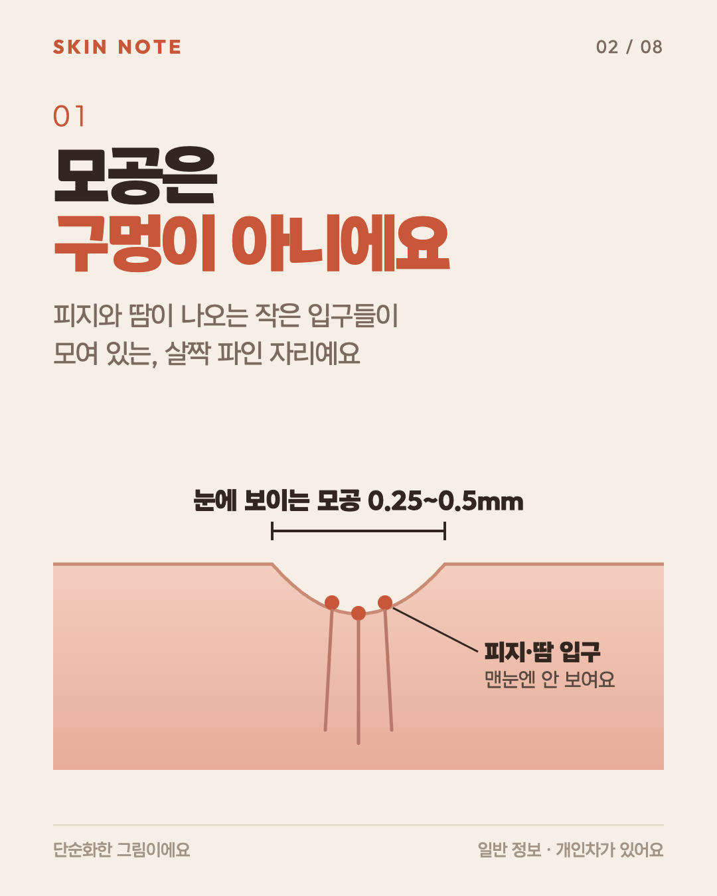
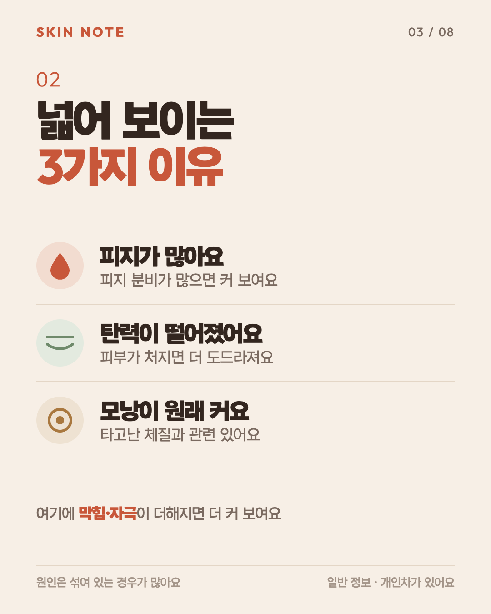
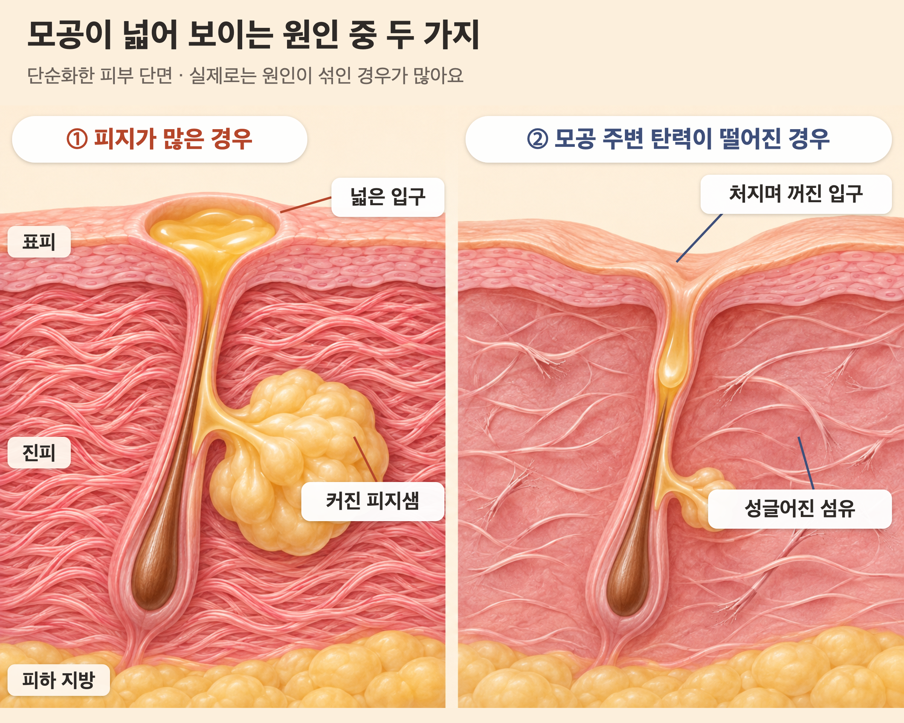
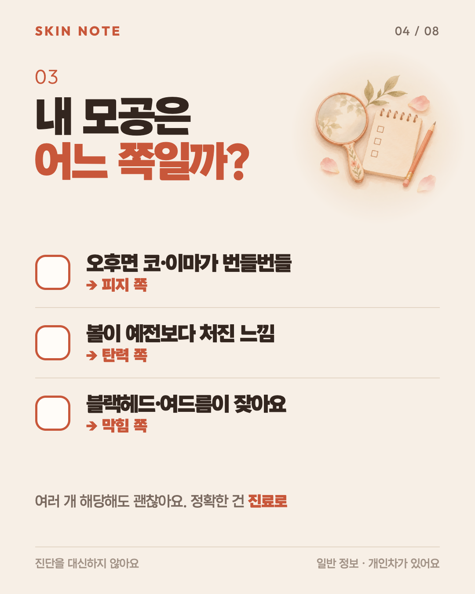
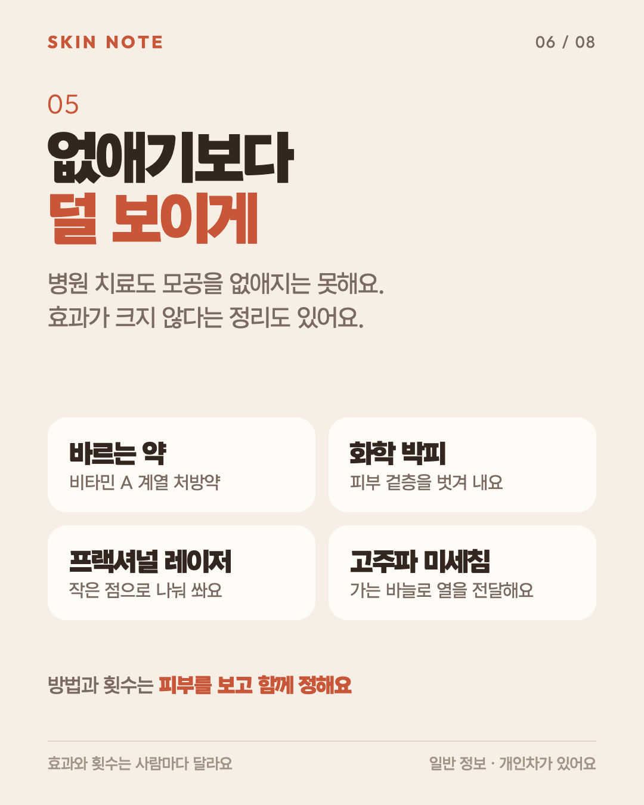
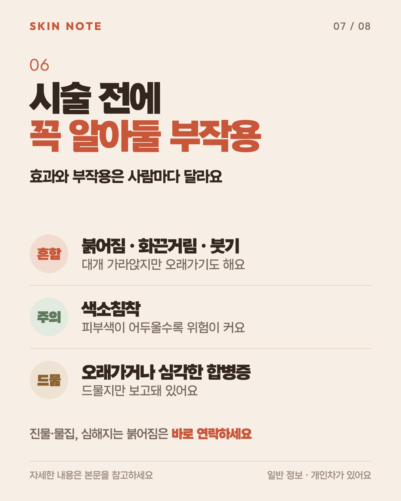
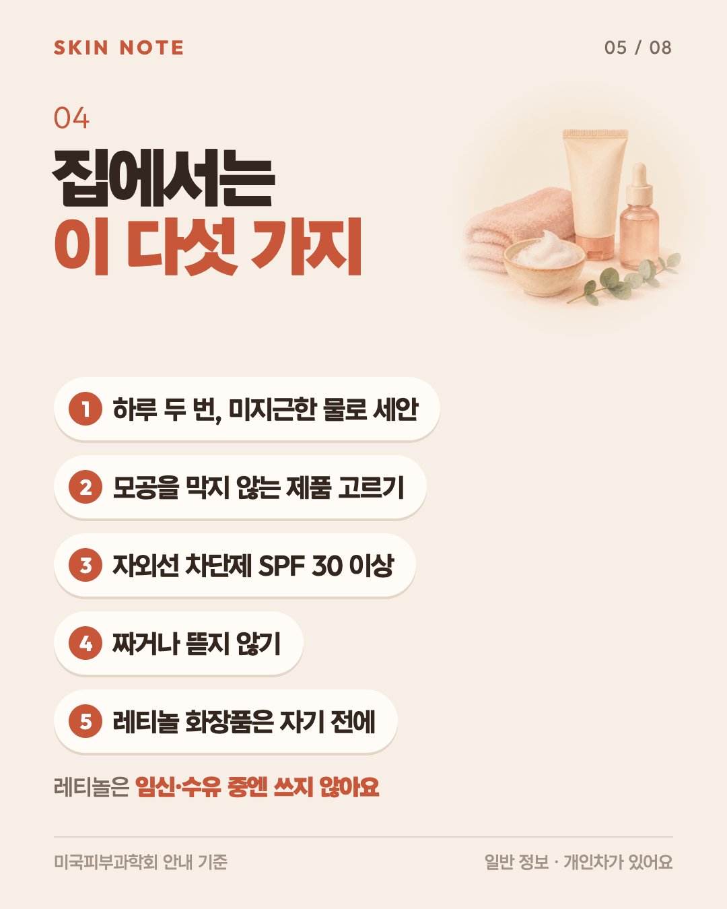
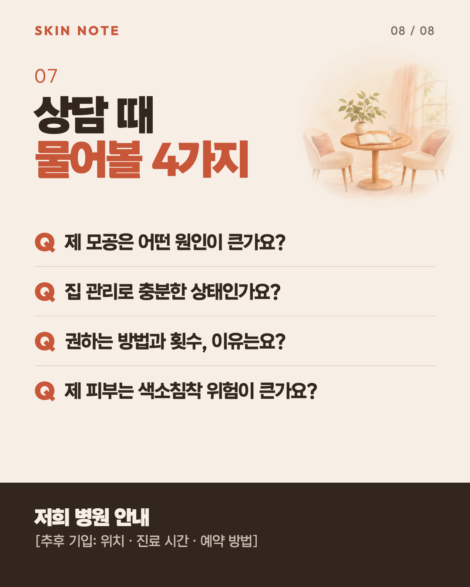

넓은 모공, 왜 생기고 어떻게 관리하나요? 원인별 8가지 질문
모공은 피지와 땀이 나오는 작은 입구들이 모여 있는, 피부 표면의 살짝 오목한 부분이에요1,2. 거울을 가까이 볼 때마다 코와 볼의 모공이 신경 쓰이셨다면, 내 모공이 왜 넓어 보이는지부터 알아두면 관리 방향을 잡기 쉬워요.

Q1모공은 정확히 무엇인가요?
눈에 보이는 모공은 구멍이라기보다 피부 표면의 얕은 함몰이에요2.

털과 피지가 나오는 모낭(피부 속 작은 주머니)의 입구는 지름 약 40~80μm(마이크로미터, 1mm의 1,000분의 1),
땀구멍은 약 5~10μm라서 맨눈에는 보이지 않아요2.
거울로 보이는 모공은 약 0.25~0.5mm 크기의 오목한 부분이고,
그 안에 이런 입구가 여러 개 들어 있어요2.
넓은 모공은 질병은 아니지만 많은 사람이 고민하는 미용상의 문제예요3.
'모공'은 의학적으로 엄밀하게 정의된 용어가 아니어서,
연구마다 가리키는 범위가 조금씩 달라요4.
Q2모공은 왜 넓어 보이나요?
주요 원인으로는 피지 분비가 많은 것, 모공 주변 피부의 탄력이 떨어진 것, 모낭 자체가 큰 것, 이렇게 세 가지가 꼽혀요3.
반복되는 여드름, 성호르몬,
피부 관리 습관도 영향을 주고3,
타고난 체질, 모공을 막는 화장품,
오랜 자외선 노출도 관련 요인이에요4.
여성은 생리 주기에 따라 모공 크기가 달라질 수 있고 배란기에 가장 커 보인다는 보고가 있지만,
남녀 중 누가 모공이 더 넓은 경향인지는 연구마다 결과가 엇갈려요1.

| 원인 | 관련 내용 | 관리 방향 |
|---|---|---|
| 피지 분비가 많음 | 젊은 층에서 특히 중요하게 보는 원인 | 피지 조절 |
| 모공 주변 탄력 저하 | 피부가 처지면 모공이 더 커 보임 | 피지 조절과 함께 피부 탄력을 돕는 관리 |
| 모낭 자체가 큼 | 타고난 체질과 관련 | 크기를 바꾸기는 어려워 덜 보이게 관리 |
| 막힘·자극 | 블랙헤드처럼 모공이 막히면 넓어져 더 눈에 띔 | 막힘을 줄이고 자극 피하기 |
표는 문헌 3,4,5,6을 바탕으로 단순화했어요.
아래 그림은 이 가운데 두 가지를 그린 것으로,
왼쪽은 피지 분비가 많은 경우,
오른쪽은 모공 주변 탄력이 떨어진 경우예요.

AI로 만든 이해용 그림이며 실제 피부 사진이 아닙니다.
Q3나이가 들면 모공은 계속 넓어지나요?
사람과 피부 특성에 따라 달라요.
중국·프랑스·인도·일본 여성 2,585명의 볼 모공을 분석한 연구에서,
인도 여성은 나이가 들수록 모공이 뚜렷하게 커졌지만 나머지 나라 여성은 18~29세의 모공이 가장 작았고 40세 무렵부터는 크기가 더 늘지 않고 비슷하게 유지됐어요2.
한국인은 포함되지 않았고,
화장품 회사 연구진이 진행한 연구라는 점도 함께 봐 주세요.
나이가 들며 피부 탄력이 떨어지고 처지면 모공이 더 커 보일 수 있고,
자외선 손상이 많을수록 피부 탄력이 떨어진다고 해요5.
여드름은 반복되면 모공에 영향을 줄 수 있지만3,
여드름이 심할수록 모공이 더 넓은 것은 아니라는 분석도 있어요4.
다만 염증성 여드름은 모공 입구를 약하게 해 막히기 쉽게 만들 수 있어요1.
Q4내 모공이 어떤 원인인지 어떻게 알 수 있나요?
원인은 한 가지보다 여러 가지가 섞인 경우가 많아, 진료로 피부를 보고 원인을 가려야 맞는 방법을 고를 수 있어요3.

스스로 짐작해 볼 때는 피지가 많아 번들거리는 편인지,
피부 처짐이 함께 신경 쓰이는지,
블랙헤드나 여드름이 잦은지를 떠올려 보세요.
문헌에서는 젊은 층은 피지 조절에,
나이가 있는 층은 피지 조절과 함께 피부 탄력 쪽에 초점을 두라고 권해요6.
모공처럼 보이는 작은 노란 돌기는 모공과 다른 경우가 있어요.
지름 3mm 정도까지의 노란 돌기는 피지샘이 커진 '피지샘 증식증'일 수 있어요.
해롭지 않아 꼭 치료할 필요는 없지만,
피부암의 일종인 기저세포암과 헷갈리기도 해서 진료로 구분해 보는 게 좋아요7.
Q5치료 방향은 어떻게 다른가요?
치료는 피지 분비를 줄이거나, 피부를 새로 만들어 탄력을 돕거나, 모낭 크기를 줄이는 쪽을 겨냥해요4.

거론되는 방법은 아래와 같아요1.
| 방법 | 어떤 방법인가요 | 알아둘 점 |
|---|---|---|
| 바르는 약 | 병원에서 처방하는 비타민 A 계열 바르는 약 | 모공이 덜 보인 것이 여드름이 좋아져서인지, 모공 자체에 대한 효과인지는 아직 분명하지 않아요4 |
| 화학 박피 | 약물로 피부 겉층을 벗겨 내는 시술 | 가벼운 박피는 원하는 결과를 위해 3~5회가 필요할 수 있다고 안내돼요. 모공만을 위한 안내는 아니에요8 |
| 프랙셔널 레이저 | 레이저를 아주 작은 점 모양으로 나눠 쏘는 시술 | 아시아인 피부에서는 밀도를 낮추고 간격을 넓혀 여러 번 나눠 하는 방식이 색소침착 위험을 줄이는 방법으로 권해져요9 |
| 고주파 미세침 | 가는 바늘로 피부 속에 고주파 열을 전달하는 시술 | 일시적인 통증, 붉어짐, 붓기가 주로 보고됐어요10 |
어떤 방법을 몇 번 할지는 원인과 피부 상태를 보고 정해요.
원장님 확인: 저희 병원에서 시행하는 방법과 횟수·간격
다만 모공을 예방하거나 줄이는 치료는 효과가 크지 않다고 해요1.
모공 자체를 주된 목표로 연구한 치료가 많지 않고,
연구 대부분이 규모가 작거나 비교군이 없어 결과를 조심스럽게 봐야 해요4.
피부는 계속 나이 들기 때문에 박피의 결과도 대부분 영구적이지 않아요8.
그래서 모공을 없애기보다 덜 눈에 띄게 관리하는 쪽으로 기대치를 잡는 게 좋아요.
Q6시술 후 어떤 부작용이 생길 수 있나요?
치료 효과와 부작용은 피부 상태와 시술 강도에 따라 사람마다 달라요.

- 공통가볍고 대개 가라앉는 화끈거림과 붉어짐이 흔하게 보고됐어요6. 붉어짐이 몇 달 가는 경우도 있어요8.
- 바르는 약건조, 각질, 화끈거림, 붉어짐이 생길 수 있어요. 주름·색소 치료를 위한 한 임상시험에서는 피부 자극 때문에 약을 쓴 사람의 4%가 사용을 중단했어요(효과 성분이 없는 가짜 약을 쓴 사람은 1%)4.
- 화학 박피가벼운 박피는 회복에 1~7일이 걸리고, 붉어짐이 가라앉은 뒤 3~7일 동안 각질이 일어날 수 있어요. 일부에서는 몇 달 이어지는 붉어짐이나 일시적인 색소침착(피부가 갈색으로 짙어지는 것)이 생길 수 있어요. 흉터는 매우 드물지만 생길 수 있다고 안내되고, 아시아인처럼 유색 피부는 피부 특성을 잘 모르고 시술하면 영구적인 색소 문제가 생길 수 있어요8.
- 프랙셔널 레이저아시아인 피부에서 주된 합병증은 염증 후 색소침착과 기미가 다시 짙어지는 것이에요9. 합병증은 가벼운 것부터 심각한 것까지 다양하고 오래갈 수 있으며, 피부색이 어둡거나 예민한 부위이거나 위험 요인이 있을수록 생기기 쉽다고 보고됐어요11. 기미가 있다면 미리 말씀해 주세요. 원장님 확인: 드물게 생길 수 있는 부작용(감염·흉터 등)
- 고주파 미세침일시적인 통증, 붉어짐, 붓기가 주로 보고됐고, 일부에서 여드름 같은 발진이 생겼어요10. 원장님 확인: 드물게 생길 수 있는 부작용
- 회복 기간과 주의 대상원장님 확인: 시술별 회복 기간, 임신·수유·켈로이드 체질·복용 중인 약 등 시술 주의 대상
화학 박피 뒤 자외선 차단을 지키지 않거나 딱지를 뜯으면 감염이나 흉터 위험이 크게 높아진다고 안내돼요8.
다른 시술 뒤 관리 방법도 상담 때 꼭 안내받으세요.
붉어짐·화끈거림·가려움·붓기가 심해지거나 진물·물집이 생기거나,
색이 오래 짙어지면 바로 병원에 알려 주세요.
연락 방법은 글 아래 안내를 참고해 주세요.
Q7집에서 할 수 있는 관리는?
미국피부과학회는 알맞은 관리로 모공을 덜 눈에 띄게 할 수 있다며 아래 방법을 안내해요5.

- 세안하루 두 번, 미지근한 물로 부드럽게 씻어요. 뜨거운 물과 문지르기는 피부를 자극해 모공이 더 커 보이게 할 수 있어요.
- 제품 고르기'논코메도제닉(모공을 막지 않는)' 표시가 있는 제품을 골라요. 모공이 막히면 넓어져 더 눈에 띄어요.
- 레티놀 화장품피지가 많거나, 여드름이 가볍게 있거나, 탄력이 떨어진 피부에 도움이 될 수 있어요. 자기 전에 바르고, 자극이 생기면 세안 후 30분 기다렸다가 발라요. 임신·수유 중에는 쓰지 않아요.
- 여드름이 있다면막힌 모공을 뚫는 데 도움이 될 수 있는 살리실산이 든 세안제를 써 볼 수 있어요.
- 자외선 차단제자외선 A·B를 모두 막고 물에 강한 SPF 30 이상 제품을 발라요.
- 짜거나 뜯지 않기짜고 뜯는 습관은 피부를 자극해 모공을 더 도드라지게 해요.
'모공은 따뜻하면 열리고 차가우면 닫힌다'는 말은 흔하지만,
미국피부과학회 안내에는 이런 설명이 없어요.
오히려 뜨거운 물이 피부를 자극해 모공이 커 보일 수 있다고 해요5.
Q8진료가 필요한 때와 상담 때 물어볼 질문은?
피부 처짐이 함께 신경 쓰인다면 피부과 진료로 상태를 확인해 볼 수 있어요5.

여드름이 계속 올라오거나,
노란 돌기처럼 모공과 다르게 보이는 것이 있을 때도 진료로 확인해 보세요.
- 제 모공은 피지, 탄력, 모낭 크기, 막힘 중 어떤 영향이 큰가요?
- 집에서 하는 관리로 충분한지, 시술을 고려할 상태인지 궁금해요.
- 권하시는 방법과 횟수·간격, 그 이유는 무엇인가요?
- 제 피부에서 색소침착 위험은 어느 정도인가요?
- 시술 후 붉어짐·각질은 얼마나 가고, 화장은 언제부터 할 수 있나요?
- 전체 비용은 어떻게 되나요?
마무리하며
모공은 연구에 참여한 성인 여성 모두에게서 관찰될 만큼 흔한 피부 구조예요2.
내 모공이 넓어 보이는 원인을 알면 관리 방향을 잡기 쉬워요.
헷갈리신다면 진료로 피부 상태부터 확인해 보셔도 괜찮아요.
저희 병원에서 차근차근 설명드릴게요.
추후 기입: 위치·진료 시간·예약 방법·시술 후 이상 시 연락 방법
- Chan L, Enlarged pores (DermNet, 2017)
- Flament F, Francois G, Qiu H, et al., Facial skin pores: a multiethnic study (Clin Cosmet Investig Dermatol, 2015;8:85–93)
- Lee SJ, Seok J, Jeong SY, et al., Facial pores: definition, causes, and treatment options (Dermatol Surg, 2016;42(3):277–285)
- Dong J, Lanoue J, Goldenberg G, Enlarged facial pores: an update on treatments (Cutis, 2016;98(1):33–36)
- American Academy of Dermatology, What can treat large facial pores? (AAD, 열람 2026)
- Parvar SY, Amani M, Shafiei M, et al., The efficacy and adverse effects of treatment options for facial pores: a review article (J Cosmet Dermatol, 2023;22(3):763–775)
- Oakley A, Ngan V, Sebaceous hyperplasia (DermNet, 2014)
- American Academy of Dermatology, Chemical peels: FAQs (AAD, 열람 2026)
- Wat H, Wu DC, Chan HH, Fractional resurfacing in the Asian patient: current state of the art (Lasers Surg Med, 2017;49(1):45–59)
- Ren K, Liu H, Li B, Zhou B, Fractional microneedle radiofrequency treatment for enlarged facial pores: a real-world retrospective observational study on 75 patients (J Cosmet Dermatol, 2022;21(12):6742–6753)
- Metelitsa AI, Alster TS, Fractionated laser skin resurfacing treatment complications: a review (Dermatol Surg, 2010;36(3):299–306)
※ 이 글은 모공에 대한 일반적인 정보이며, 진단이나 치료를 대신하지 않습니다. 치료 효과와 부작용은 개인에 따라 다를 수 있으므로 의료진과 충분히 상담한 뒤 결정하시기 바랍니다.
일반 정보 제공 목적의 글이며, AI의 도움을 받아 초안을 작성하고 사람이 검토했어요.